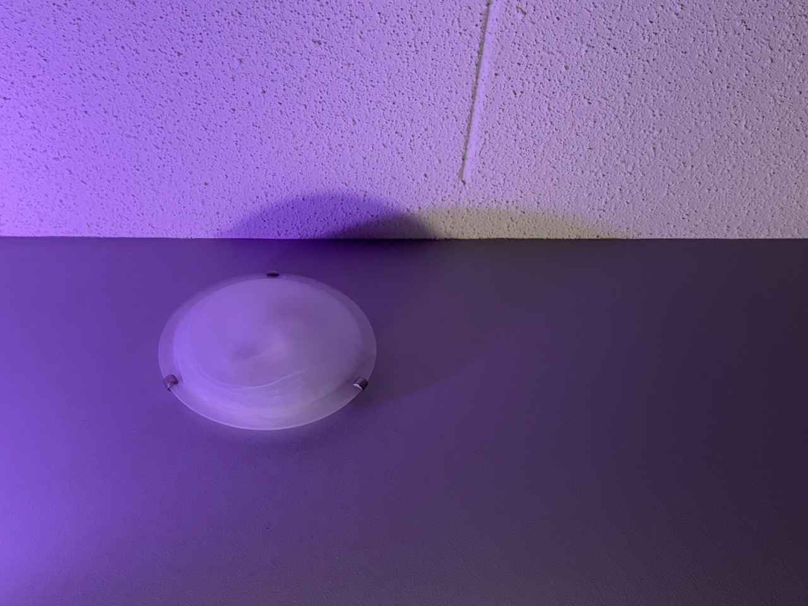
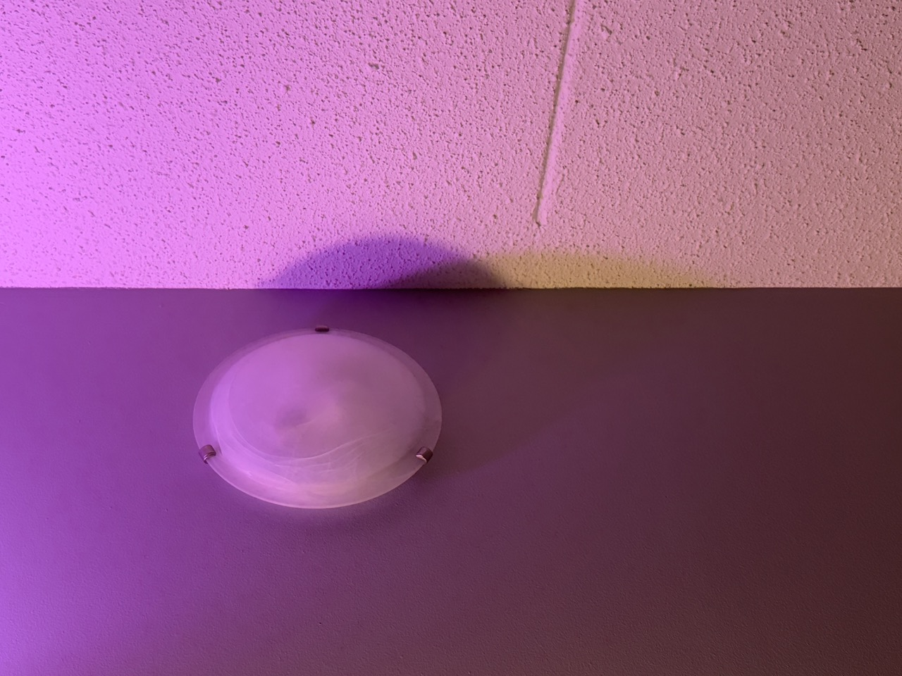
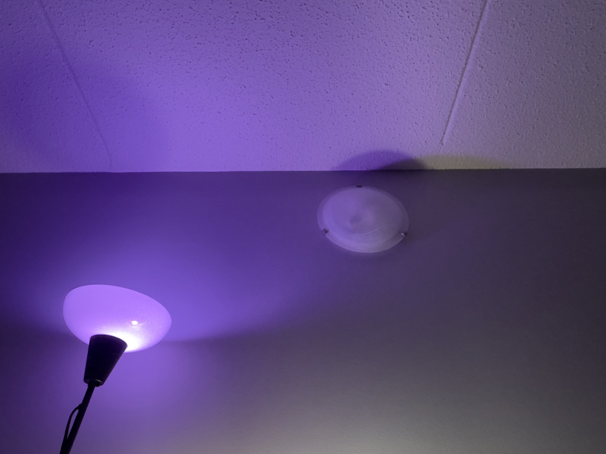

Floor Lamp, and How the Color of the Room Changes Everything



I got this floor lamp at the beginning of living here, but recently I got the matching pair of wireless dimmable/colour bulbs with a remote.
I always dreamed of changing the mood of the room with different lighting settings after seeing too many videos of others decorating their game rooms. The light strap seems appealing, but it is so much easier to change the bulb.
I complained to my mom about the yellowish lighting in my room before, and how it made me feel tired and drowsy when studying. I always thought studying with cool-tune white light would help me perform better in math and science, and warmer, darker lighting would benefit me when creating. These were only guesses before.
From the test so far, I have slept better with darker purple, pink, or red lighting on, and my mood does change depending on its color. I also notice I dream and get inspired more frequently right now. I was warned that a colored room isn't good for doing art, but those are concerns more based on color calibrations, I guess.